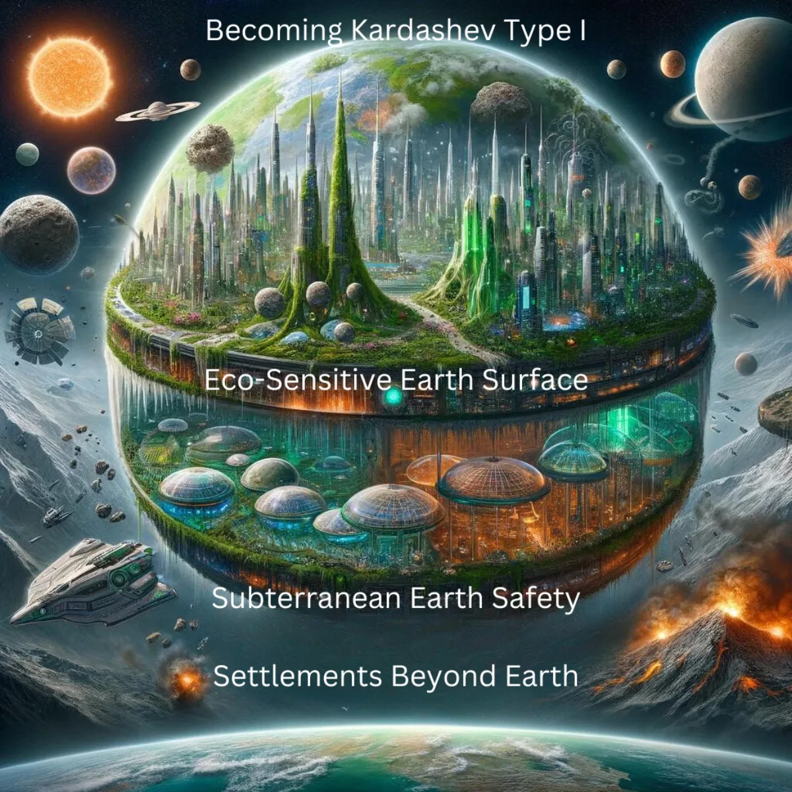
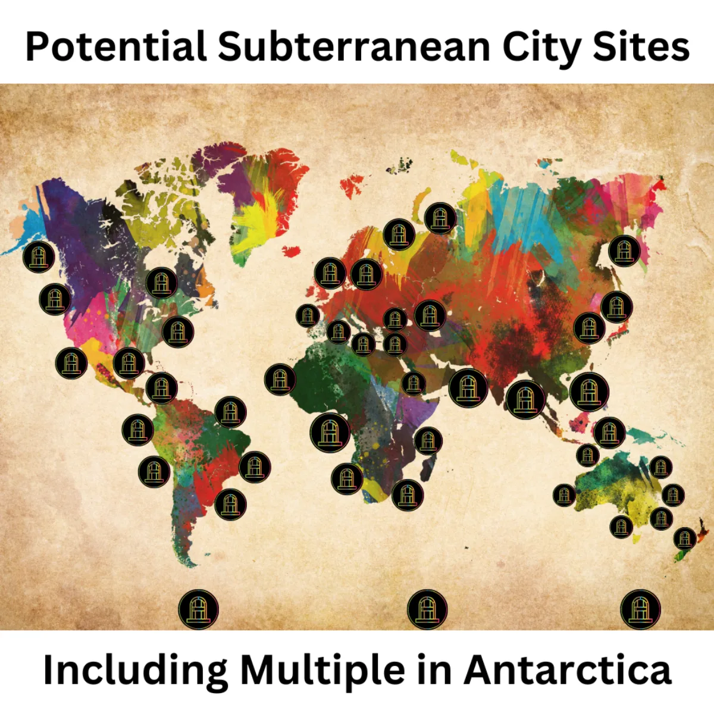
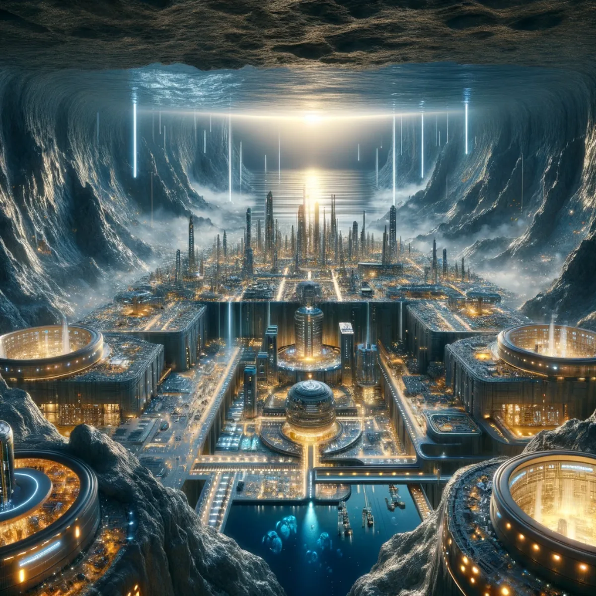
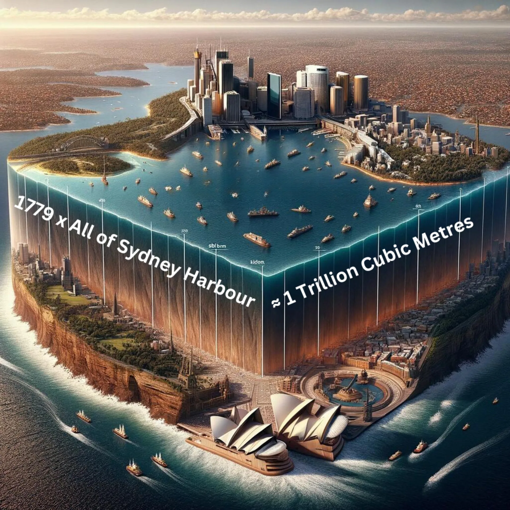
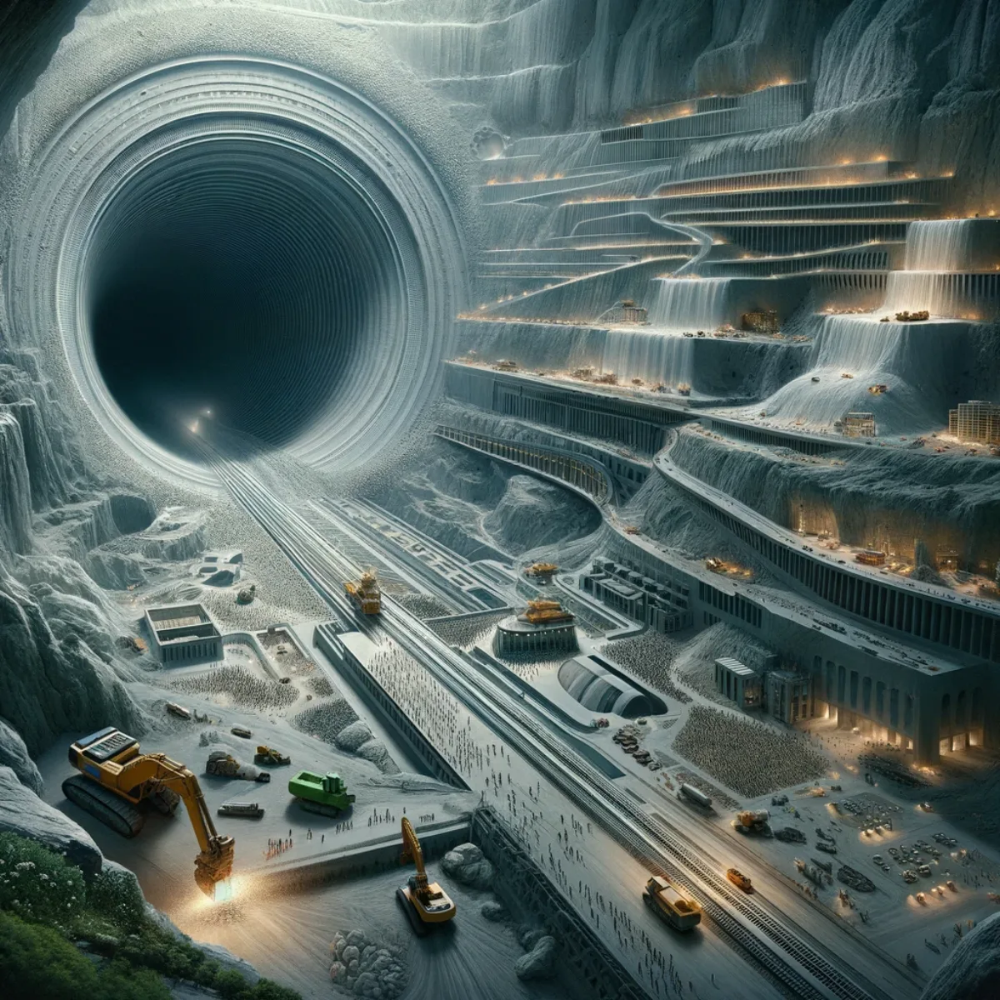
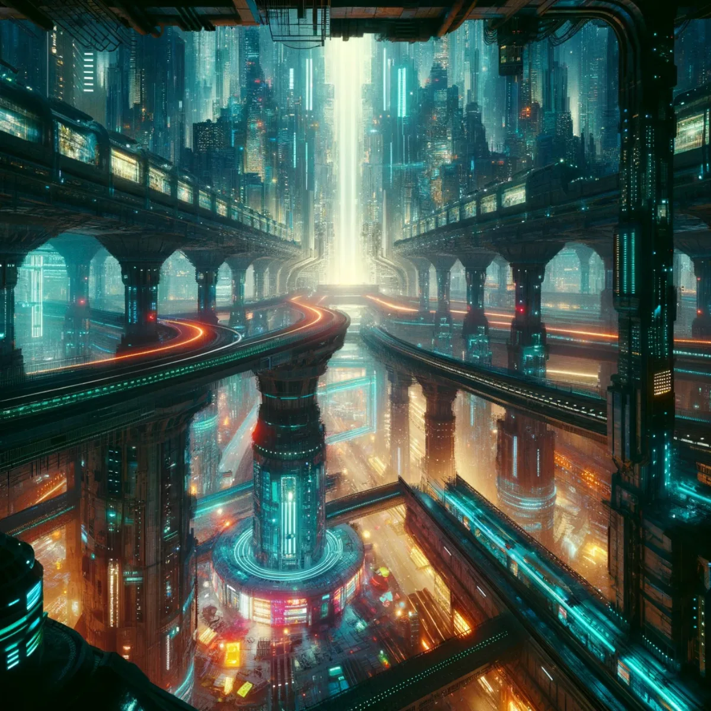
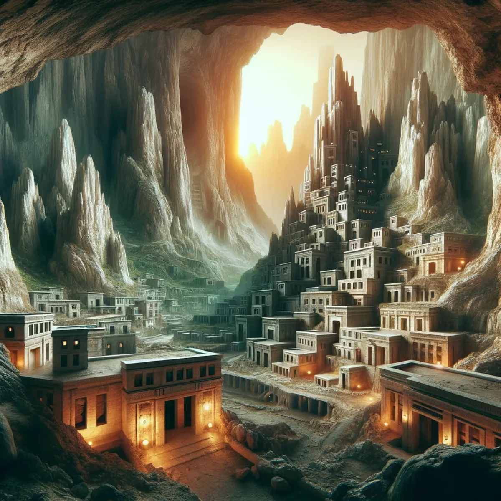
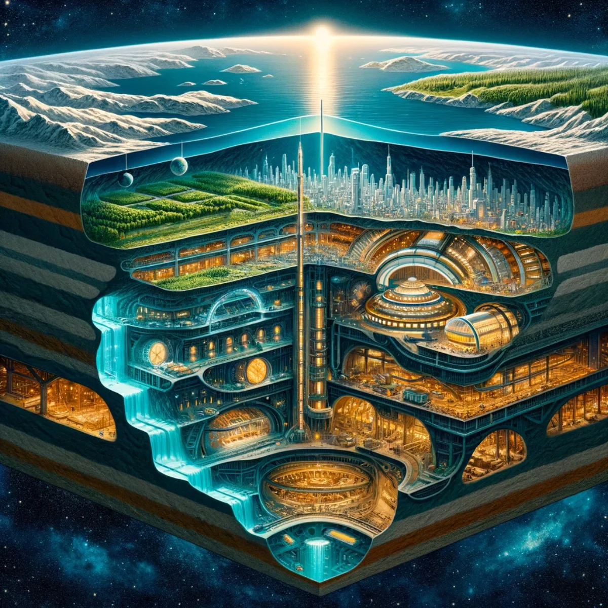
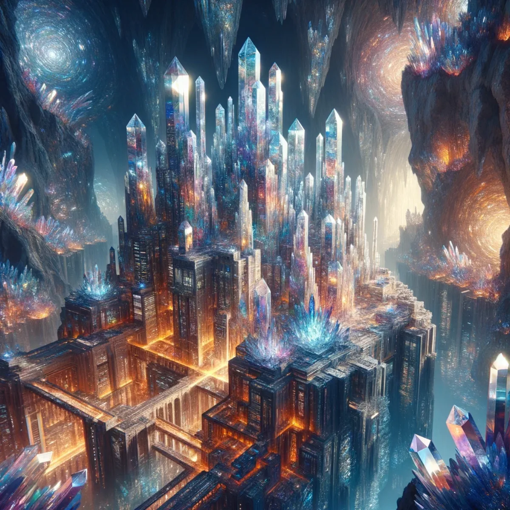

Pathways / Frontiers
Subterranean Eco-Cities
A tri-realm plan for resilience above ground, below ground and off-world, with self-sustaining cities woven deep within the Earth, built and owned by the people who shelter in them.

Humanity's tri-realm odyssey for survival and thriving
Beyond Horizons, Beneath Earth, Among Stars
Picturing a multi-tiered future, humanity stands on the brink of a Kardashev Type I civilisation, ready to meet existential threats with a considered approach to how we design civilisation itself. Above, an eco-sensitive society thrives in harmony with nature; beneath, vast subterranean cities offer shelter from Earth's capricious temperament, guarding our species through ice ages, fiery solar flares and tectonic upheavals.
Beyond Earth, our reach extends to settle diverse planets and moons, so human civilisation endures across the cosmos. The strategy is clear: diversify, inhabit and flourish in the sanctuaries we create, built and owned by the communities who live in them rather than rented from anyone, both within our home planet and far beyond.

Unlocking Earth's hidden potential: embracing a future woven deep within
Beneath Our Feet: The Global Tapestry of Tomorrow
As the world stands on the brink of unprecedented change, a bold vision unfolds across the globe. From the ancient ice of Antarctica to the vibrant shores of every continent, the map charts a course for humanity's most audacious project yet: potential subterranean city sites.
This plan, audacious in its scope and revolutionary in its implications, proposes a network of self-sustaining subterranean cities, each a beacon of hope and human ingenuity, and each built and owned by the people it shelters rather than leased from a distant provider. Envision a world where the safety of billions is secured not in the heavens but in the nurturing womb of Earth itself, where each icon on this map is not just a mark but a promise: a promise of life, continuity, and the unyielding spirit of our species to thrive against all odds.

Unearthing future havens: from DeepMind's discoveries to AGI's revolution
Beneath the Surface: Envisioning Subterranean Sanctuaries
Imagine cities nestled deep beneath the Earth's surface, shielded from the caprices of space by the very planet that cradles life. Envision a future where humanity's resilience is fortified not just by concrete and steel, but by the ingenuity of artificial intelligence and the building blocks of tomorrow's metamaterials.
As DeepMind's GNoME AI unveils a trove of stable new materials, the construction of subterranean cities moves from sci-fi fantasy towards something buildable. Coupled with the emergence of AGI, tools that communities can shape and own rather than rent, these materials hold the key to crafting sanctuaries that safeguard civilisations against extra-terrestrial threats, all the while nurturing the blossoming of a society that thrives in harmony with the environment and the infinite expanse above.

Beneath our feet, a new world awaits: one cubic metre at a time
Sydney, Australia: Subterranean Odyssey
To grasp the sheer magnitude of this undertaking, let's draw a parallel with Sydney Harbour, a natural marvel with a volume of approximately 562 million cubic metres. Allocate 100 cubic metres for each person, about the size of a small apartment with an integrated AI Auto-Farm you own, and that volume would serve close to the entire population of Greater Sydney, around 5.5 million individuals.
This comparison not only highlights the scale but also bridges the gap between imagination and feasibility, illustrating a tangible benchmark for what could become humanity's most ambitious habitat creation project yet.

Burrow, build, thrive: shaping Earth's depths for safety
Pioneering 1 Trillion Cubic Metres of Refuges for Humanity
As we stand on the cusp of an era defined by unprecedented existential challenges, a subterranean Kardashev Type I civilisation emerges not just as a visionary idea but as a crucial step towards the longevity and flourishing of humanity. Envision a world where up to 10 billion souls find sanctuary beneath the Earth's surface, each allocated a generous expanse of 100 cubic metres, designed as a self-sustaining ecosystem complete with an In-Home AI Auto-Farm they own and shape.
This monumental endeavour, requiring the excavation of 1 trillion cubic metres, transcends the realms of imagination to become a tangible solution for thriving through and beyond the existential threats looming over us. From meteoric catastrophes to solar anomalies, our subterranean havens promise a resilient shield against the caprices of nature, while fostering a harmonious coexistence with the planet we call home.

Underwater, under Earth: shielded from the cosmos' wrath
Beneath the Waves: Humanity's Haven
One path in humanity's search for resilience to survive extreme cosmic upheavals is creating cavernous cities in the depths beneath Earth's waters as the ultimate sanctuaries against cosmic threats. These subterranean havens, shielded by layers of water and earth, offer unparalleled protection from asteroid impacts, cosmic rays, and solar disturbances.
As the universe's tumult unfolds above, these subterranean underwater realms ensure our survival. Embodying our enduring spirit and ingenuity in the face of the cosmos' current unpredictability, we continue our march of progress to learn more about reality and its long cycles.

Beneath the tide, a new dawn rises: sheltering billions with innovation and harmony
Gulf of Thailand and South China Sea
For China and the southern Asian countries adjacent to the Gulf of Thailand and South China Sea, we consider a combined population approaching 2 billion. Providing 100 cubic metres of space for each individual would necessitate excavating a volume equivalent to 356 times the volume of Sydney Harbour.
This region, with its strategic importance and expansive maritime area, offers a viable setting for subterranean cities. These underwater habitats could serve as a resilient safeguard for billions, harnessing the natural protective layers of water and earth.

A sanctuary for unity: a billion lives safeguarded by nature's embrace
Bay of Bengal and Andaman Sea
Focusing on the eastern parts of India, along with Bangladesh, Sri Lanka, and Myanmar, the population can be estimated at around 1 billion. To accommodate this demographic, a subterranean volume equivalent to 178 times Sydney Harbour would be required.
The Bay of Bengal and the Andaman Sea, characterised by their depth and vastness, could feasibly support such ambitious subterranean developments. These areas could become sanctuaries, ensuring the survival and thriving of these populations amidst global challenges.

Beneath the Arabian waves, a cradle of civilisation: a billion hopes anchored in the sands of time
Arabian Sea
In the Arabian Sea, catering to the populations of western India, Pakistan, and the Middle East, with a combined population nearing 1 billion, the required excavation volume would be about 178 times that of Sydney Harbour.
The Arabian Sea's strategic location and depth make it an ideal candidate for this conceptual endeavour. Here, a network of subterranean cities could offer a durable refuge against existential threats, promoting sustainable living and cultural harmony for the diverse inhabitants of these regions.
Keep exploring